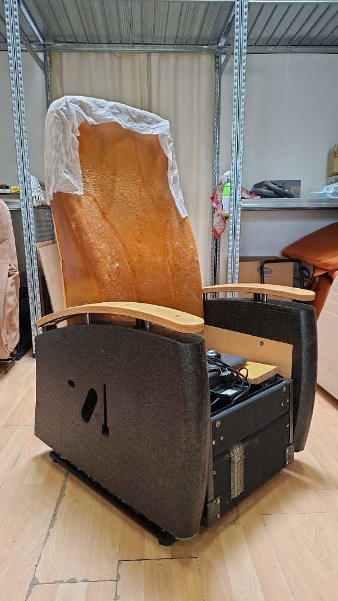
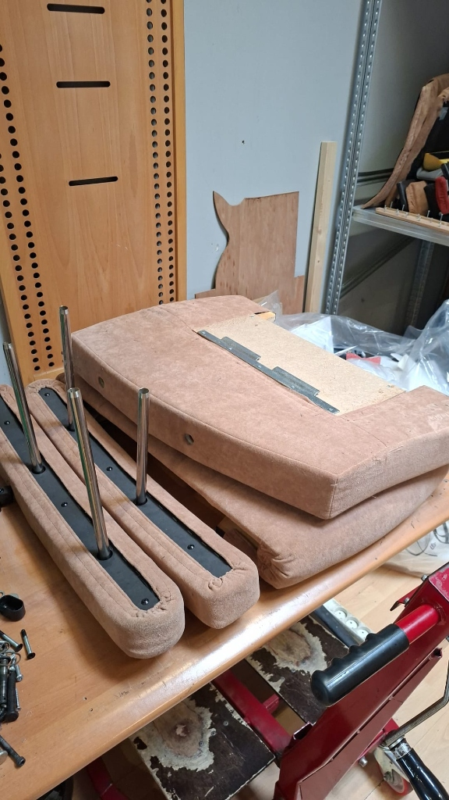
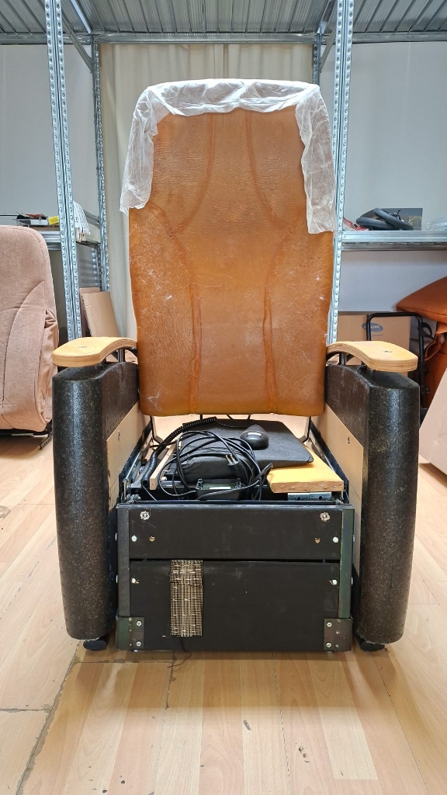
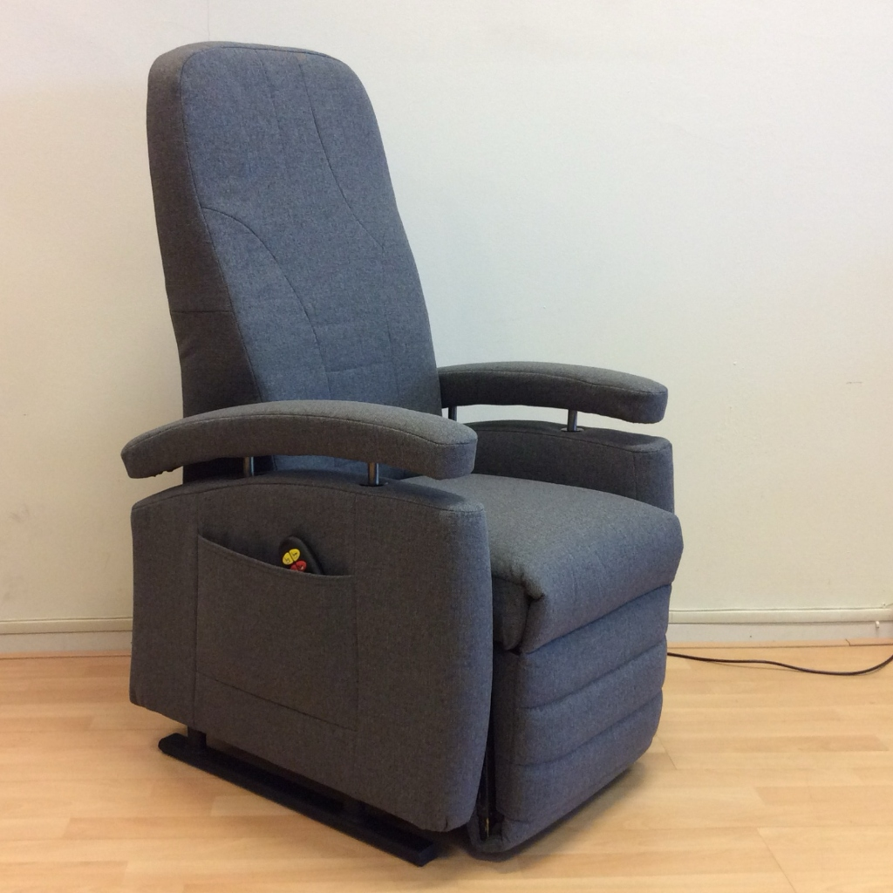

Als Nieuw
Ons Unieke Revisieproces
Wij transformeren kwalitatieve A-merk sta-op stoelen tot prachtige, als-nieuwe exemplaren. Ontdek ons zorgvuldige revisieproces stap voor stap.

Wij transformeren kwalitatieve A-merk sta-op stoelen tot prachtige, als-nieuwe exemplaren. Ontdek ons zorgvuldige revisieproces stap voor stap.
Bij staopstoelen.nl geloven we in duurzaamheid, medische verantwoording en topkwaliteit. Onze gediplomeerde BewegingsTechnologen reviseren premium A-merk sta-op stoelen (zoals Fitform en Doge) tot in het kleinste detail. Van het reinigen en controleren van de motoren tot het vernieuwen van de vulling en de bekleding: elke stoel verlaat onze werkplaats als nieuw. Bekijk hieronder stap voor stap hoe ons zorgvuldige revisieproces verloopt.
Volledig ontmanteld tot op het stalen frame; motoren en elektronica doorgemeten.
Gecertificeerd nieuw koudschuim en dieptereiniging; gegarandeerd bacterie- en geurvrij.
Bij levering door onze BewegingsTechnoloog afgesteld op beenlengte en rughoek.
Gegarandeerde dekking op frame, motoren én elektronica met eigen service aan huis.

Vakkundige ontmanteling, reiniging en mechanische controle
Onze BewegingsTechnologen ontmantelen de stoel zorgvuldig tot op het stalen basisframe. De motoren, spindels, bekabeling en elektronische besturingsunit worden diepgaand gereinigd, doorgemeten en getest onder belasting. Eventuele versleten bedrading of twijfelachtige componenten worden direct preventief vervangen door originele fabrieksonderdelen.

Hernieuwde opbouw voor optimaal comfort en maximale hygiëne
Hygiëne staat bij ons voorop. De armleuningen en zitkussens worden ontdaan van de oude vulling en voorzien van nieuw, gecertificeerd koudschuim (pantera/HR-schuim). Vervolgens wordt de stoel vakkundig opnieuw bekleed met slijtvaste, gemakkelijk te reinigen zorgstoffen of hoogwaardig kwaliteitsleder. De stoel is na deze opbouw 100% hygiënisch schoon, bacterievrij en biedt het comfort van een splinternieuw exemplaar.

Strenge testcyclus onder dynamische belasting
Alle mechanische en elektrische functies van de stoel ondergaan een strenge testcyclus onder belasting. De onafhankelijke motoren voor de rugleuning, voetensteun, kantelverstelling en de krachtige sta-op lift worden gecontroleerd op een geruisloze, soepele werking. Ook de handbediening en eventuele accu worden nauwkeurig doorgemeten.

Inclusief 2 jaar volledige garantie (ook op motoren & elektronica)
Het resultaat is een prachtige sta-op stoel die zowel optisch als technisch in absolute nieuwstaat verkeert. Volledig gedesinfecteerd, ergonomisch op uw lichaam afgesteld en standaard geleverd met 2 jaar volledige garantie op het frame, de motoren én de complete elektronica. Mocht er ooit iets zijn, dan lost onze eigen servicedienst dit snel en kosteloos bij u thuis op.
Geen vage voorwaarden: volledige dekking op het frame, de elektromotoren en alle printplaten/bediening, inclusief gratis service aan huis door onze eigen vakmensen.

Een tweedehands sta-op stoel van een particuliere verkoper past vrijwel nooit bij uw lichaamsbouw. Een te diepe zitting knelt bloedvaten af, en een verkeerde zithoogte bemoeilijkt het opstaan aanzienlijk. Onze gediplomeerde BewegingsTechnologen stellen elke gereviseerde stoel bij aflevering kosteloos tot op de centimeter nauwkeurig op uw lichaam af:
Het frame, de motoren en de mechanische delen van A-merk stoelen (zoals Fitform en Doge) worden volledig doorgemeten en getest.
Alle schuimdelen en de bekleding worden volledig vervangen door gecertificeerde, hoogwaardige en makkelijk te reinigen materialen.
Onze BewegingsTechnologen stellen de stoel bij levering exact in op uw lichaam. Geleverd met 2 jaar volledige garantie en service aan huis.
U bent van harte welkom in onze showroom in Dordrecht om onze gereviseerde en nieuwe sta-op stoelen vrijblijvend te proberen. Wij bezorgen uw stoel gratis bij u thuis en stellen deze direct op maat voor u af.